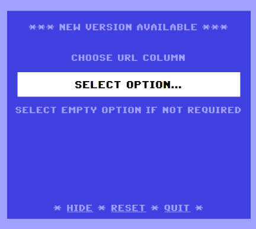

There may be situations when you'd like to create custom page URLs. For example, let's assume that you own an online shop that sells laptops. A typical URL for a produce page might look something like this:
https://www.yoursite.com/store_items/display/88Wouldn't it be nice if you could change these types of URLs so that they are:
Custom routing makes this and more possible. Let's go through a few different scenarios and explore how we could use custom routing to create attractive page URLs.
Challenge: You'd like to use a 'news' module from a previous project (we'll call it 'website A') to create a new blog for a second website ('website B'). However, you don't want the new blog module to contain URLs that start with 'news/'. Instead, you'd like the URLs to start with 'my-blog/'.
More Info: Let's assume that the homepage for the 'news' module is:
http://yoursite.com/newsSo, typing the URL shown above into the address bar would load the index method for the 'news' module. Your goal might be to load the news module by going to:
http://yoursite.com/my-blogHow It's Done:
<?php
$routes = [
"my-blog" => "news"
"tg-admin" => "trongate_administrators/login",
"tg-admin/submit_login" => "trongate_administrators/submit_login"
];
define("CUSTOM_ROUTES", $routes);http://yoursite.com/store_items/display/88http://yoursite.com/laptops/display/88In custom_routing add the following key value pair to the $routes array:
"laptops/display/(:num)" => "store_items/display/$1",However, there appears to be evidence supporting the proposition that Google rewards higher search engine rankings to websites that contain informational indicators. Examples of informational indicators would be strings like:
http://yoursite.com/laptops/display/88http://yoursite.com/laptops/information/macbookHow It's Done:
The first step to creating a super search engine friendly URL, as described above, would involve giving all of our products a unique 'slug'. In the Trongate Desktop App this gets called a 'URL column'. It's a column in the database table that contains a URL friendly version of the product title. If you use the Trongate Desktop app then this can be taken care of for you automatically by simply choosing a 'URL COLUMN' that is equal to the 'product title' column (when you're creating a new module).

Having created a unique slug (URL column value) for each product, we would then add the following key value pair to the $routes array, inside custom_routing.php:
"laptops/information/(:any)" => "store_items/display/$1",If you can follow the steps above then congratulations! You now know how to build pages that are super search engine friendly and that load approximately twenty times faster than Laravel. Best of all, your clients will think you're a genius after they've made it to the top of Google and recommended you to all of their friends!